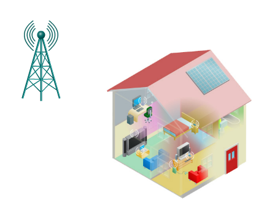
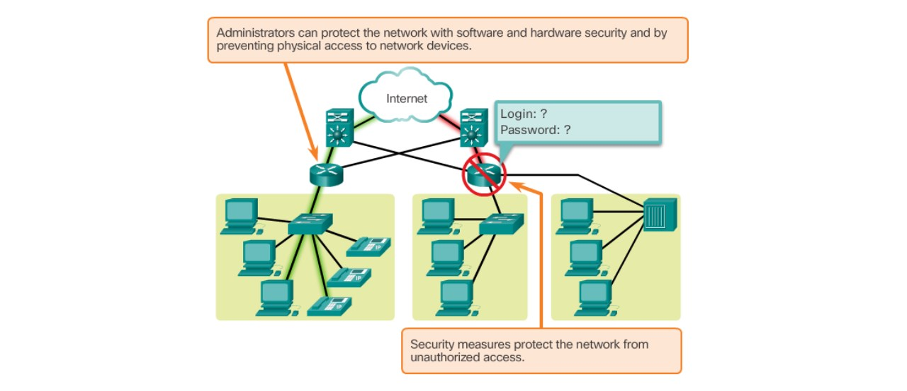
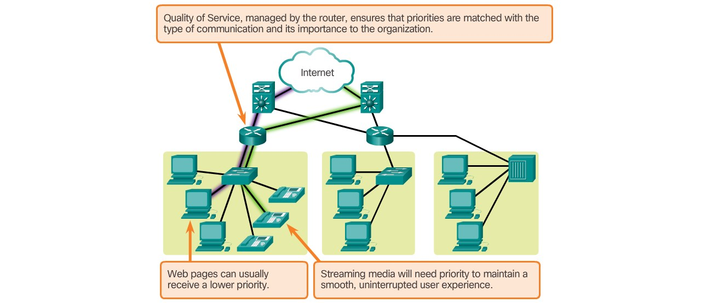
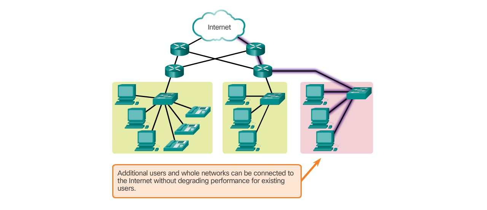
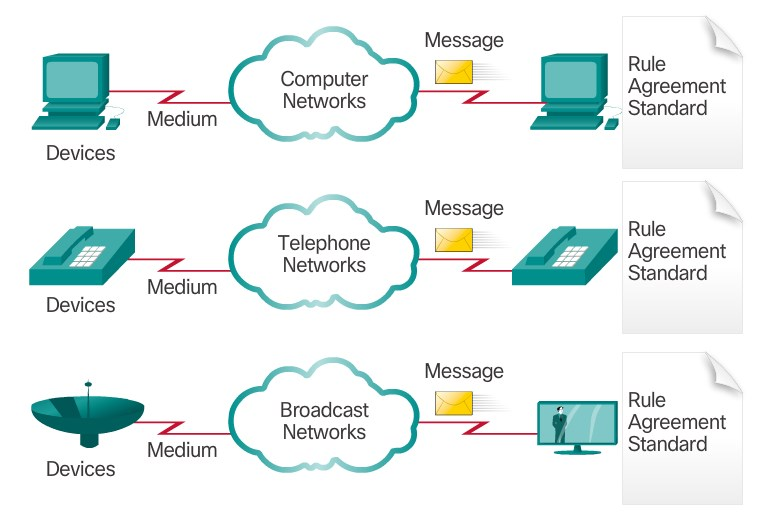
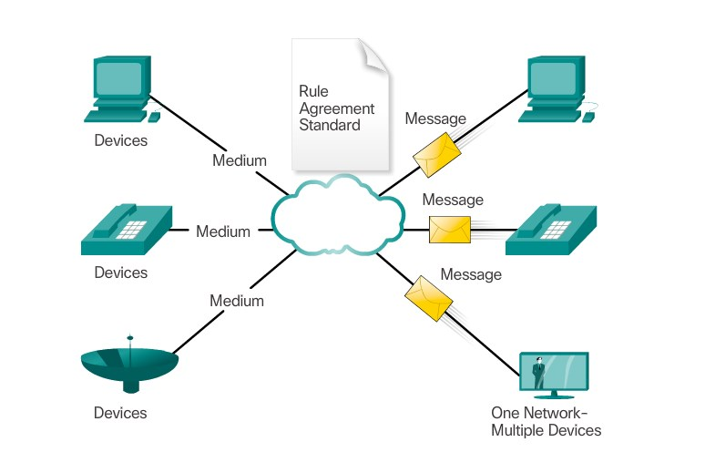
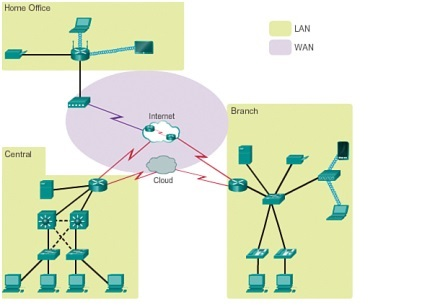
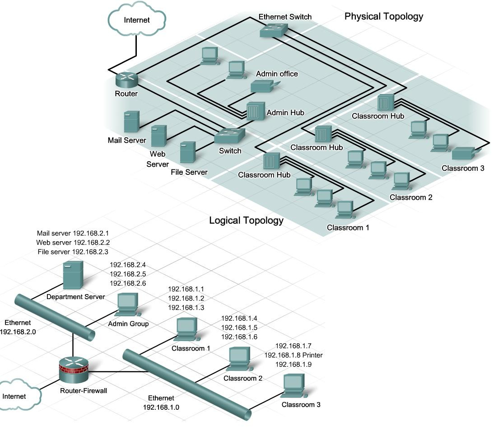
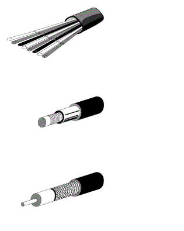
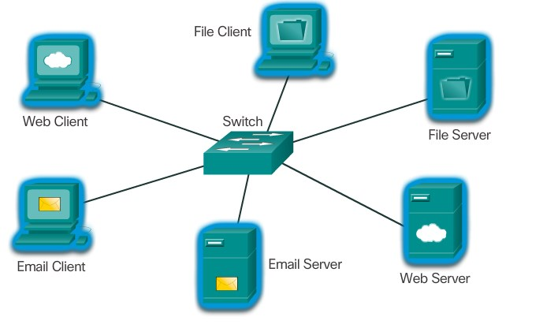

Any Questions?
Includes the use of various protocols
- IP
- Open shortest Path first
- Serial line interface protocol
- Frame Relay, VLAN, Ethernet
- Access control lists (ACL)
- And others
CCNA Certification
Validates an individuals ability to:
- Install
- Configure
- Operate
- And troubleshoot ... Medium-sized route and switched networks

Cisco Network Architecture
- Ensure the connection of any device
- Cost efficiency
- Improve network security, management and business processes
Security Technology
- Antivirus
- Antispyware
- Dedicated firewall systems
- Access control lists (ACL)
- Intrusion prevention systems
- Virtual private networks

Threats to Networks
- Viruses, worms and trojan horses
- Spyware and adware
- Zero-day-attacks
- Hacker attacks
- Denial of service Attacks
- Data Intersection and theft / Identity theft
House Technology
- Smart Home Technology
- Powerline Technology
- WISP Technology and WBS
New Trends
- Bring Your Own Device
- Online Collaboration
- Video communications
- Cloud computing

Chapter 1.4 - The Changing Network Environment
- New Trends
- House Technologys
- Threats to Networks
- Security Technology
- CCNA Certification
- Includes the use of various protocols
Reliable Network
Security

Reliable Network
Quality of Service

Reliable Network
Scalability

Reliable Network
Fault tolerance

Reliable Network
A Reliable Network consists of:

Converged Networks
Networks then (Multiple services - multiple networks)
Networks now (Multiple services - one network)
Chapter 1.3 - The Network as a Platform
- Converged Networks
- Reliable Network
Local Area Network (LAN)
- used for small geographical areas
- connects end devices in a limited area
- school, office building, home, ...
- provide high speed bandwidth
- administrated by a single person or organisation
Wide Area Network (WAN)
- used for wide geographical areas
- managed by ISPs
- interconnect LANs over wide geographical areas
- cities, states, countries, ...
Types of Networks
The type depends on a few factors:
- Size of the area that need to be covered
- Number of users
- Number and types of different services
- Area of responsibility
- Most common types
- LAN
- WAN

Topology diagrams
- easy way to represent a network
- plan of the network structure
Toloplogy diagrams:
- Physical topology diagram
- physical location
- Logical topology diagram
- devices, ports and adressing scheme

Network Media
- medium that transmit the data
Today common methods:
- Metallic wires within cables
- Glass or plastic fibers
- Wireless transmission
Criteria to choose the network media:
- In which enviroment will the media be installed?
- What is the amount of data at which it must be transmitted?
- What are the costs of the media and installation?
- What is the maximum distance?

Intermediary Network Devices
- connects end devices up to a network
- individual network
- connects multiple individual networks
- internetwork
- provide connectivity
- ensure that data flows across the network
End Devices
- two categories
- source device
- destination device
- most poeple are familiar
Network Components
- transmit data
Devices:
- physical elements
- called hardware
- pc, switch, router, ...
Media:
- transmission medium
- two technologies cable- and wireless media
Services:
- applications used of the network
- email- or web hosting, ...
Chapter 1.2 - LANs, WANs and the Internet
- Network Components
- End Devices
- Intermediary Network Devices
- Network Media
- Topology diagrams
- Types of Networks
- LAN and WAN
Providing Resources in a Network
In a Peer to Peer network a is a computer server and client at the same time
Advantages of Peer to Peer
- Easy to set up
- Less complexity
- Lower cost since network devices and dedicated servers may not be required
- Can be used for simple tasks such as transferring files and sharing printers
Disadvantages of Peer to Peer
- No centralized administration
- Not as secure
- Not scalable
- All devices may act as both clients and servers which can slow their performance
Providing Resources in a Network
A Network consists of servers and clients
Server:
- Computers with software to provide information
Client:
- Computers with software that enable them to request display things obtained from the server
A network could look like this:
Providing Resources in a Network
There are many networks in many different sizes:

Small Home Networks

Small Office/Home Office Networks

Medium to Large Networks

World Wide Networks
Networking Today
- Today communicating over networks is quite common
- 15-20 years ago there was no internet
- Now it's possible to easily communicate with people all over the world
-
The way of learning changed:
- Research without huge lexika
- Easy access to newest information
- Remote lessons
-
The way we work changed:
- Further education online
- You can work from home
- The way we play games changed
Chapter 1.1 - Globally Connected
- Networking Today
- Providing Resources in a Network
Table of contents
- Chapter 1.1 - Globally Connected
- Chapter 1.2 - LANs, WANs, and the Internet
- Chapter 1.3 - The Network as a Platform
- Chapter 1.4 - The Changing Network Environment